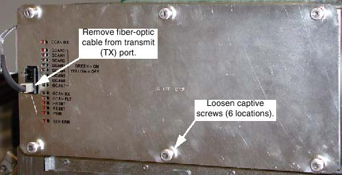

When working in the Right chassis, the fiber-optic cable must first be removed from the Transmit (“TX”) port (see Illustration 1).
Left and Right chassis have 6 captive screws.
Center chassis has 8 captive screws.
Illustration 1: Right DAS Chassis
